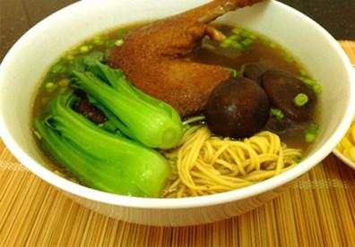

Cùng bắt tay làm thử thôi nào!
- 2 đùi vịt làm sạch, 500g xương heo ninh lấy nước dùng.
- 1 gói “Gia Vị Đồ Bổ Tiềm Vịt”
- 2 lon nước dừa tươi hoặc 2 trái dừa tươi
- Mì trứng, cải xanh, hắc xì dầu, hành tỏi bằm nhuyễn, hành lá thái nhuyễn.
- Nấm đông cô, nước tương, gừng, hạt nêm, muối, đường.
Đùi vịt rửa sạch, chà xát lại với rượu trắng, dùng khăn sạch lau khô. Ướp với tỏi băm, hạt tiêu, nước tương, muối, hạt nêm trong khoảng 30 phút cho thấm. Sau đó chiên vàng. Chiên lửa vừa thôi vì sẽ dễ cháy nếu để lửa to. Chiên kỹ nhưng đừng để cháy. Sau đó cho đùi vịt qua 1 cái nồi có nước dừa chắc sẽ ngon hơn. Rồi cho vào nồi đó 2 cái tai vị, một chút vỏ quýt. Hầm đến khi thấy vịt mềm.
Nấm đông cô ngâm với nước ấm cho mềm, cắt bỏ cuống. Các hương liệu cho vào chảo rang thơm.
Cải xanh, hành lá rửa sạch.
Xương heo rửa sạch, cho vào ninh lấy nước dùng. Vớt bỏ xương heo, gừng để vỏ, rửa sạch và nướng vàng cho vào nước dùng. Các loại hương liệu sau khi rang cho vào túi vải cột chặt rồi thả vào nước dùng. Sau đó cho đùi vịt đã chiên vàng vào nấu mềm, tiếp đến cho nấm đông cô vào. Nêm lại gia vị cho vừa ăn.
Hầm xương heo với các hương liệu và đùi vịt đã chiên vàng
Mì trứng chần sơ qua nước sôi cho mềm rồi vớt ra rổ để ráo. Cải thìa cho vào nồi luộc chín với ít dầu ăn và ít muối để cải bóng. Cải chín vớt ra cho ngay vào nước lạnh để cải giữ được màu xanh đẹp mắt.
Trụng mì trứng sơ qua nước sôi cho mềm
Cho mì vào bát, xếp đùi vịt lên trên, thêm cải thìa, tai nấm, hành lá thái nhỏ, chan nước dùng vào là bạn đã có bát mì vịt tiềm thơm ngon, nóng hổi cho cả nhà cùng thưởng thức. Thưởng thức bát mì vịt tiềm thơm lừng do chính tay mình làm ra thật thú vị.
Các bạn cũng có thể tham khảo cách nấu vịt tiềm theo kiểu miền Nam tại đây. Vịt tiềm nấu kiểu miền Nam không phải chiên (như kiểu người Hoa) mà khi nấu chín xong có thể vớt bớt mỡ cho đỡ béo, ăn kèm mì, bún hay cơm đều rất hợp. Chúc các bạn ngon miệng nha!